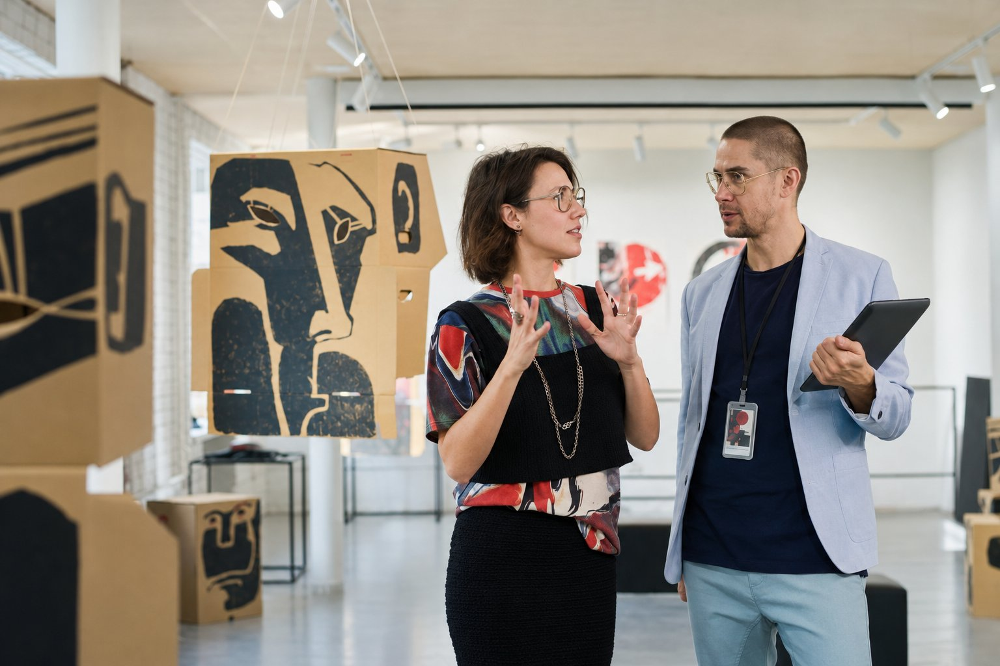
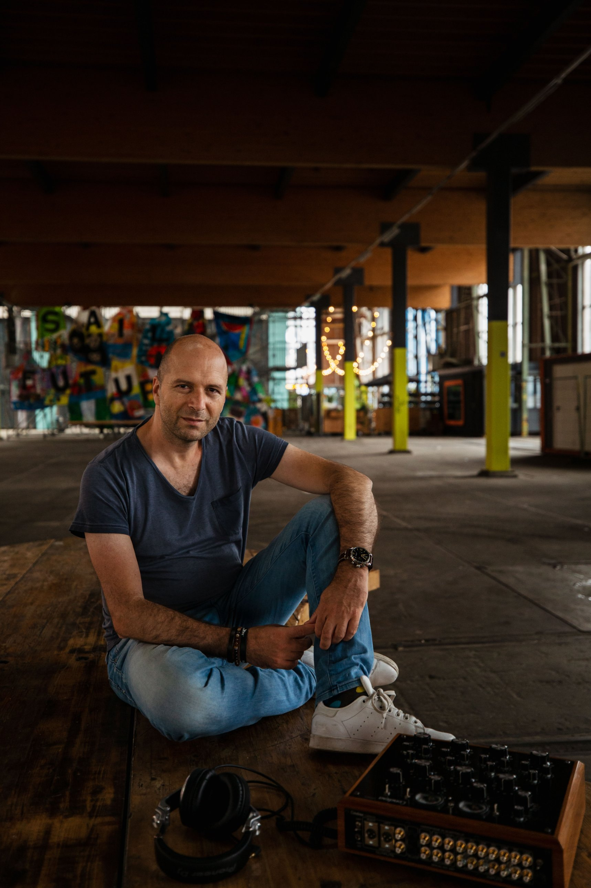
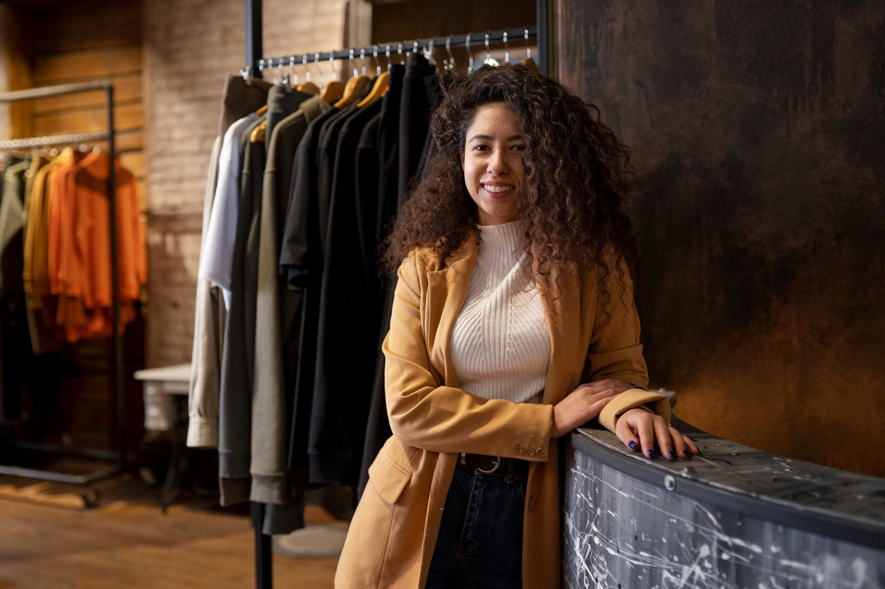
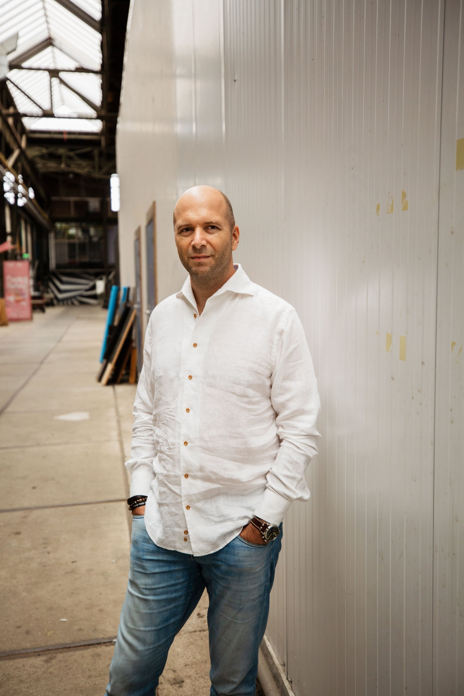
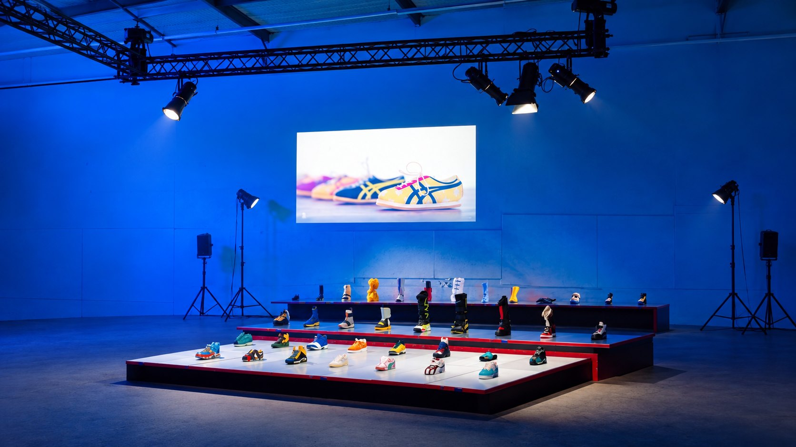

Merken, winkels,
creatieven en bureaus

Je merk, je product of je catwalk is het vertrekpunt. Daaromheen bedenken we samen de hele beleving.
We werken graag samen met de creatieven van het merk of het bureau. Jullie brengen het concept en de merkidentiteit, wij de vertaling naar licht, geluid en muziek.
Zo wordt een productdemo, een etalage of een catwalk een moment dat past bij de rest van de campagne.
Samen vormgeven
De momenten die het verschil maken
- De reveal van een product of collectie
- Een demo-area waar het product centraal staat
- De etalage of het in-store moment
- De catwalk
- Een fotogenieke plek of branded backdrop
- Een interviewhoek voor pers en content
- De omslag naar een feest, als de avond daarom vraagt
Wat we leveren
Dit kunnen we je bieden
Licht en beeld
- Productlicht met theaterspotsKleuren, materialen en details van de collectie naar voren
- Licht voor camera en socialEen backdrop en interviewhoek die ook op een telefoon kloppen
- Kleur in de ruimteDraadloze washlights in de campagnekleuren, zonder zichtbare bekabeling
- ProjectieJe logo of collectie groot geprojecteerd
Meer over atmosfeerlicht en dansvloerlicht
Muziek
- Muziek die bij het merk pastAfgestemd op de collectie, de campagne of het moment
- Een dj-set of playlists per momentVoor de ontvangst, de reveal en het feest
- Live muzikantenSaxofoon, percussie of vocals
Meer over dj's en artiesten
Concept en uitvoering
- Meedenken vanaf de conceptfaseMet het merk of het bureau, met 25 jaar ervaring in corporate communicatie
- Een lichtplan per momentLocatiebezoek, lichtontwerp en programmering
- Geluid en dj-boothVerstaanbare sprekers bij de presentatie, een volle dansvloer daarna
Speciale wensen? Laat het weten.
Daarnaast bieden we ook muzikale ondersteuning

De sound van je merk
Music for brands
Een merk heeft een eigen sound. Bij producten en collecties brengt Maarten een chique sound met wortels in warme elektronische muziek: verfijnd genoeg voor een presentatie, met genoeg groove voor de avond erna. Afgestemd op de collectie of de campagne, als dj-set of als playlist per moment.

Retail en conceptstores
Music for retail
Ook in de winkel hoort de muziek bij je merk. Bij een in-store event, een lancering of een koopzondag met een dj wordt je winkel voor een middag of avond een plek waar mensen voor komen, met licht en geluid die bij je collectie passen.
Werkwijze
Zo werken we
Briefing
Merk, campagne, doelgroep en de momenten van de avond. Hier bepalen we wat het event nodig heeft.
- 1Briefing
Merk, campagne, doelgroep en de momenten van de avond. Hier bepalen we wat het event nodig heeft. - 2Locatiebezoek of foto's en plattegrond
We bekijken de ruimte, de looproute en waar het product komt te staan. - 3Voorstel
Licht en muziek per moment, met een duidelijke prijs. - 4Afstemming met het bureau
Draaiboek, timing van de reveal, campagnekleuren en muziek. - 5Opbouw en programmering
Licht ingesteld en geluid gecheckt voordat de eerste gast binnenkomt. - 6Op de avond zelf
Eén aanspreekpunt, ook bij de omslag naar het feest.
Werk je aan een lancering, collectiepresentatie of in‑store event?
Laat je gegevens achter, dan neem ik contact met je op.

Voorbeeldcase

Sneakers in de spotlight, daarna een feest
Brand activation | modemerk | productlicht en lichtshow
“De uitstraling was precies zoals we wilden: clean, licht industrieel maar ook warm.”